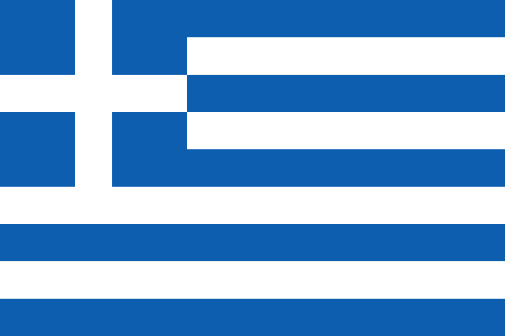

Görögország

Tudnivalók
Elhelyezkedése és földrajza
- Görögország a balkán félsziget déli részén elterülő félsziget és szigetcsoport.
- Északról Bulgária, Észak-Macedónia és Albánia határolja, keletről Törökország és az Égei-tenger, nyugatról és délről pedig a Jón-tenger és a Földközi-tenger.
- Szárazföldi részei: a Balkán-félsziget és a Peloponnészoszi-félsziget. Peloponnészoszt 6 km széles és 79 m magas földszoros választja el a szárazföldtől. A Korinthoszi-csatorna tette önálló szigetté. 1300 szigete van, ebből 170 lakott.
- A partvidék és a szigetek éghajlata mediterrán. A zárt medencékben szárazföldi jellegűvé válik a klíma. Az országban tavasztól kora őszig rendkívül tiszta a levegő és száraz. A csapadék mennyisége általánosságban véve nyugatról kelet felé egyre csökken.
- Fővárosa Athén